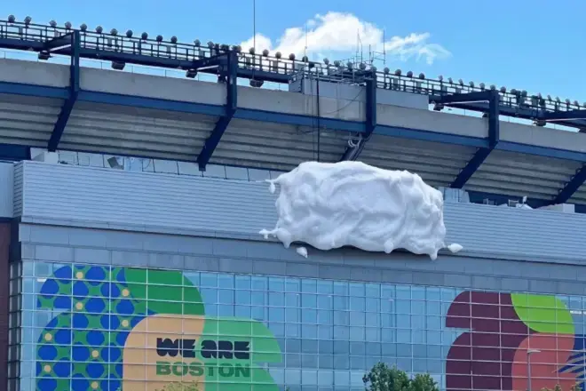

案例发生了什么

Gillette Stadium 在赛事期间需要隐藏非官方命名。品牌以一大片剃须泡沫覆盖场馆 Logo 的创意画面回应：同一个“遮标”事实，被用品类最有辨识度的物质重新解释。
CASE TAKEAWAY
案例启示
关键动作
- 不争论规则本身，而是用泡沫这一产品符号把限制说成一句无须解释的视觉笑话。
- 利用场馆命名资产的天然关注度，让品牌在不能露名时仍然可被识别。
- 把短暂的社交反应控制在“品类比喻”范围，避免暗示官方身份。
传播与商业机制
传播路径
以“Clean Stadium 限制 / 品类隐喻”为资源起点，进入创意内容、社交讨论、门店/商品与可即时参与的生活场景，让赛事权益转化为用户可接触、可讨论或可参与的内容。
商业承接
不把曝光直接等同销售，重点观察创意记忆、品牌自然提及、参与行为与商品/服务转化，并区分品牌自报、平台数据与可独立核验结果。
可复用的方法非官方创意要有自己的专属语法：让人先认出产品，再意识到赛事语境。
适用条件、风险与证据
- 切口必须与产品真实使用场景有关，否则容易变成蹭热度。
- 节奏上要靠近球迷讨论时刻，但不需要强行追每一场赛果。
- 对文化、肖像和赛事知识产权做独立审核。
证据台账可将已核动作作为内部判断基础；涉及投放规模、销售结果或合作细则时，仍应以品牌、平台或权利方的一手发布为准。 当前记录：已核（公开报道）；素材状态：已归档核心画面。
EVIDENCE LEDGER
资料状态与补证方向
当前资料基础
不依赖最高级别赛事标识，争夺足球文化和生活场景。 页面已记录参与路径、动作机制、证据状态与素材状态。
优先补证
已归档素材状态为“已归档核心画面”，下一步应继续补发布日期、投放场景和可归因效果。
结果口径
尚未归档可独立验证的效果数据时，不以曝光推断销售，也不把平台整体数据归因到单一品牌。